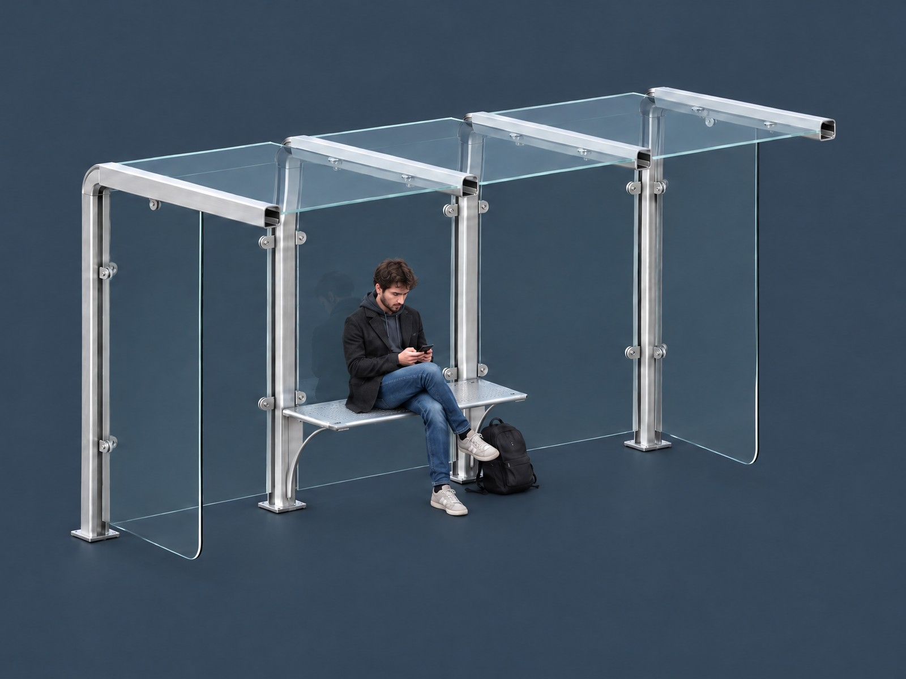
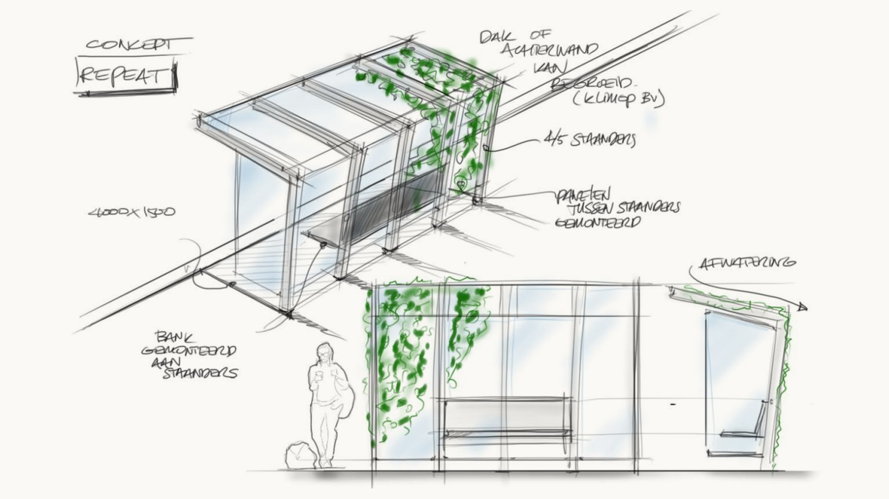
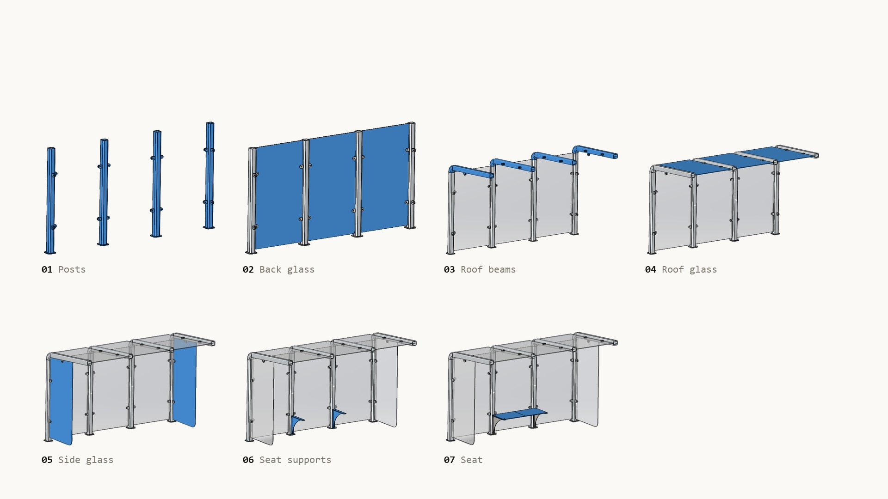
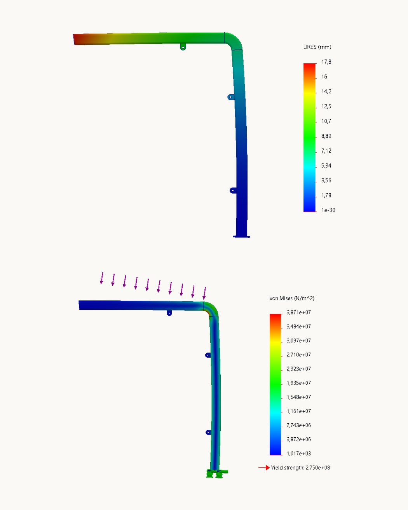
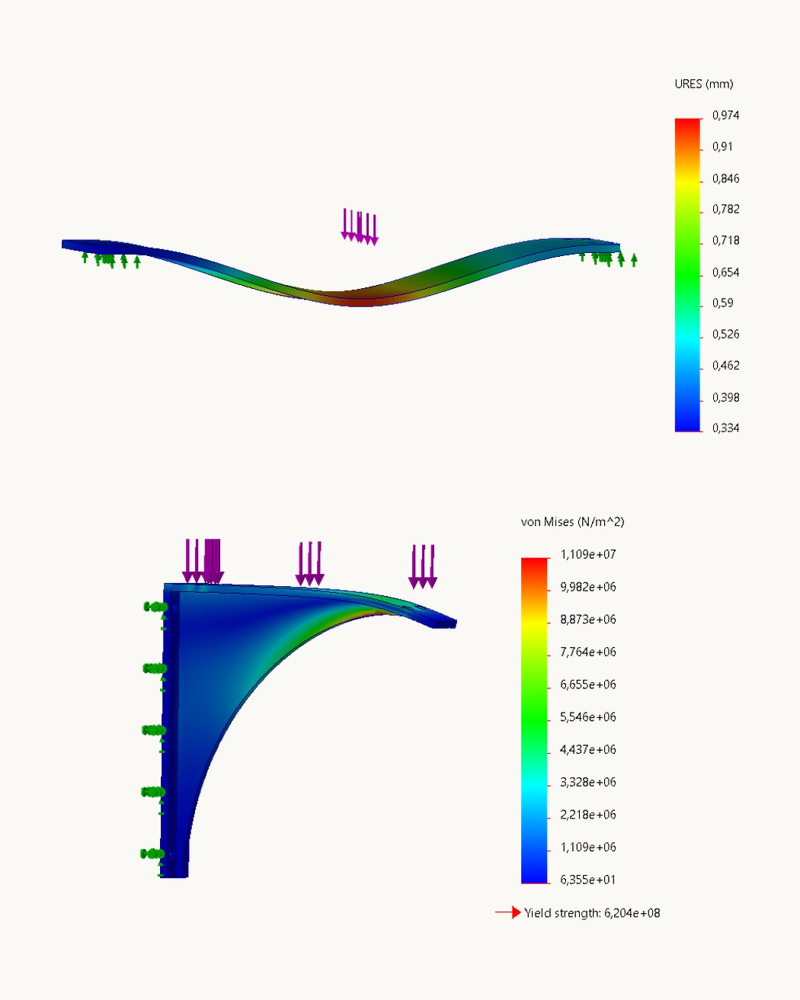

Half a metre of snow
The roof and frame may not bend more than 20 mm under a 50 cm layer of snow, about 236 kg on the roof.
A glass and aluminium bus shelter, calculated to carry half a metre of snow and planned so two people can place it in an afternoon.

A bus shelter looks simple, but it has to stand outside for years, carry a roof full of snow and survive people who sit, lean and hang on it. It also has to be made 400 times, at a price that can compete with a standard shelter of around 4,000 euros.
In this school case on metal products I took a shelter from a concept sketch to a design that is proven in numbers. The client gave a list of requirements: a metal frame, room for five people to stand, a seat for two, a footprint of at most 4 by 1.5 metres and mounting on concrete Stelcon slabs.
I compared materials, modelled the shelter in SolidWorks, checked the frame and the seat with hand calculations and FEM analyses, and wrote out the assembly step by step.

Solo project
I did this case on my own, in four weekly posters: form and material, the frame, the seat and the assembly.
For each part I made a hand calculation and a FEM analysis in SolidWorks and compared the two. Where a result was over the limit I changed the design, and where it was far under I wrote down how the part could be made lighter.
Every requirement had to be shown with a number, not with a feeling.
The roof and frame may not bend more than 20 mm under a 50 cm layer of snow, about 236 kg on the roof.
The seat has to hold two people of 120 kg each and bend no more than 10 mm in the worst case.
Every part should be as light as possible, so one worker can handle it within the Dutch ARBO norm.
Two workers have to place the complete shelter on concrete Stelcon slabs within four hours.
The design has to suit a production run of 400 and stay competitive with a standard shelter.
Rain, wind, sun and rough use: the shelter has to stay safe for every kind of user with little maintenance.
A simple repeating frame, checked part by part until the numbers fit.
Chosen over stainless and galvanised steel: light, strong enough, resistant to corrosion and low in maintenance.
Glass between the posts keeps the shelter open. Tempered glass was chosen for safety and resistance to vandalism.
Hand calculation and FEM both give about 2.2 mm under snow, 0.02 mm apart and far below the 20 mm limit.
The first analysis of the full post went over the limit at 24.1 mm. After reworking the post it came to 17.8 mm.
The steel seat bends about 1 mm. Its support uses around 2% of the yield strength, so I proposed a lighter profile.
Posts bolted to the slab, glass held in clamps, seat last. The plan adds up to 3 hours and 15 minutes.


